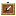
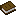
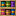
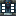
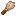

The Table
Your table is a felt board in its own dimension. Everything you own sits on it as a card.
Moving Around
Move with W A S D. Hold Space to pull back and move faster, or Ctrl to get in close. Click empty felt to glide there, and press Shift to leave the table. Those are the default keys, and the Controls book in your hotbar shows yours.
Handling Cards
Left-click a card to pick it up, along with everything stacked on it. Click again to drop it, or drop it on another card to stack it. Right-click opens packs and books. Hover a card to see its tooltip, including what it sells for.
Your Hotbar
While you're at the table your real inventory is put away, and your hotbar holds these tools instead. You get your inventory back when you leave.
| Slot | Tool | What it does |
|---|---|---|
| 5 | Speed | Right-click for 2× or 4× speed. Left-click to pause. |
| 6 |  Move Area | Right-click two corners and everything inside follows your cursor. Left-click to put it down, or right-click to put it all back. |
| 7 | Grid | Right-click to line every card up on the block grid. While it's selected, cards you drop snap to the grid too. |
| 8 |  Controls | Shows every key. |
| 9 | Wrench | Right-click to enter tool mode and link up machines. See Machines. |
Card Slots
You start with 15 card slots. If you have more cards than slots, the game freezes until you sell some. Every card counts, including cards on the side table, in the quest area, and in your hand. Emeralds and books don't count.
- A

Shelf gives 10 more slots. - A

Vault gives 25 more. - Each boss trophy gives 2 more.
Table Size
Your table starts at 18 by 18. Every 10 card slots above 15 makes it 2 wider, up to 30 by 30. It only ever grows.
For more room, unlock the Side Table to the left by dropping 10 Emerald Blocks on its shop, then grow it with Table Leaves. A Wandering Carpenter starts coming by after your third supper, and he trades Table Leaves for emeralds.
Day and Night
The table follows the world's day and night, and days are half as long as normal. Supper happens every morning at dawn, and monsters come out at night.
Painting the Table
Right-click the 